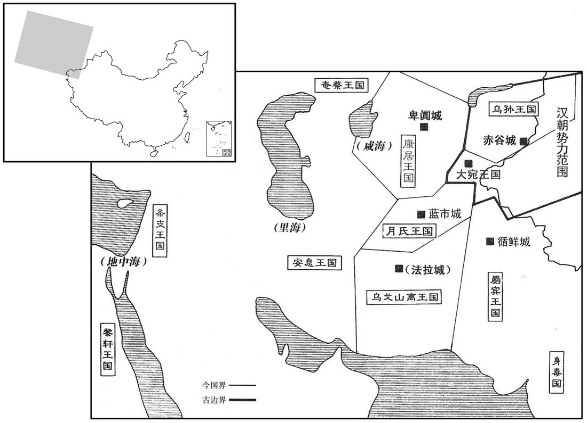

公元前1年资治通鉴：本年记事、原文与白话对照
按原书编年位置阅读；追叙和史论不等于本年发生的事件。白话采用所据译本，缺译不以生成译文补齐。
卷35 · 本年记事
公元前1年 · 汉孝哀皇帝元寿二年
二年〔（庚申、前一）〕
上传原文的注释括号有异常，字符原样保留；无法可靠划分的段落默认全文显示。
本年事件索引（现代整理）

本年形势与背景参考图
春，正月，匈奴单于及乌孙大昆弥伊秩靡皆来朝，〔朝，直遥翻。〕汉以为荣。是时西域凡五十国，〔三十六国，分为五十余国。〕自译长至将、相、侯、王皆佩汉印绶，凡三百七十六人；〔译长之官，西域诸国皆有之，所以通其国之语言于中国。长，知两翻。〕而康居、大月氏、安息。罽宾、乌弋之属，〔乌弋山离国去长安万二千二百里，不属都护，东与罽宾、西与舭靬、条支接。氏，音支。罽，音计。〕皆以绝远，不在数中，其来贡献，则相与报，不督录总领也。〔正谓不属都护也。〕自黄龙以来，单于每入朝，其赏赐锦绣、缯絮辄加厚于前，以慰接之。单于宴见，〔见，贤遍翻。〕群臣在前，单于怪董贤年少，以问译。〔师古曰：译，传语之人也。〕上令译报曰：大司马年少，以大贤居位。」单于乃起，拜贺汉得贤臣。是时上以太岁厌胜所在，〔是年太岁在申。师古曰：厌，音一涉翻。〕舍单于上林苑蒲陶宫，〔蒲陶，本出大宛。武帝伐大宛，采蒲陶种植之离宫，宫由此得名。师古曰：舍，止宿。〕告之以加敬于单于；单于知之，不悦。
春季，正月，匈奴单于以及乌孙大昆弥伊秩靡都到长安朝见，汉朝认为很荣耀。这时西域共有五十个王国，自译长到将、相、侯、王，都佩带汉朝颁赐的印信、绶带，共有三百七十六人。而康居、大月氏、安息、宾、乌弋等国，都因离汉朝太远，不包括在五十国之内。当他们来贡献，汉朝就给予相当的还报，不把他们归属在西域都护管辖范围。自黄龙年间以来，单于每次来崐长安朝见，天子赏赐的锦绣、丝绸、丝绵，都比前一次多，用安抚来接待他们。单于在天子闲暇时进见天子，群臣正在殿前，单于对董贤的年轻感到惊奇，就向翻译询问，哀帝命翻译回答说：“大司马虽年轻，却是因为有大贤能才居高位的。”单于于是起身，拜贺汉朝得此贤臣。这年，哀帝因太岁在申，压伏南方，就安排单于住在长安之南的上林苑蒲陶宫，告诉单于说，为了更加尊敬单于才这样安排。后来单于知道了内情，感到不悦。
夏，四月，壬辰晦，日有食之。
夏季，四月，壬辰晦（疑误），出现日食。
五月，甲子，正三公官分职。〔成帝绥和二年，置三公官。哀帝建平三年，罢。今复正三公官名。分职，谓大司马掌兵事，大司徒掌人民事，大司空掌水土事。分，扶问翻。〕大司马、卫将军董贤为大司马；丞相孔光为大司徒；彭〔【章：甲十六行本「彭」上有「御史大夫」四字；乙十一本同；孔本同；张校同。〕宣为大司空，封长平侯。〔恩泽侯表：长平侯，国于济南。〕
五月，甲子（初二），正式确定三公官名和各自的分工职掌。任命大司马、卫将军董贤为大司马；丞相孔光为大司徒；彭宣为大司空，封长平侯。
六月，戊午，帝崩于未央宫。〔臣瓒曰：帝年二十即位；即位六年，寿二十五。师古曰：即位明年乃改元，寿二十六。〕
六月，戊午（二十六日），哀帝在未央宫驾崩。
帝睹孝成之世禄去王室，〔谓政在王氏也。〕及即位，屡诛大臣，〔谓杀朱博、王嘉等。〕欲强主威以则武、宣。〔师古曰：则，法也。〕然而宠信谗谄，〔谓赵昌、董贤、息夫躬等。〕憎疾忠直，〔谓师丹、傅喜、郑崇等。〕汉业由是遂衰。
哀帝目睹了孝成皇帝时代政权脱离王室情形，及至登极，他屡次诛杀大臣，想效法汉武帝和汉宣帝，加强君主之威。然而他宠任奸佞，听信谗言，憎恨忠直的之臣，汉朝的大业从此便衰落了。
太皇太后闻帝崩，即日驾之未央宫，〔之，往也。〕收取玺绶。〔玺，斯氏翻。绶，音受。〕太后召大司马贤，引见东箱，〔见，贤遍翻。〕问以丧事调度；〔师古曰：调，选发也。度，计料也。调，徒吊翻。〕贤内忧，不能对，免冠谢。太后曰：「新都侯莽，前以大司马奉送先帝大行，〔谓成帝之丧也。〕晓习故事，吾令莽佐君。」贤顿首：「幸甚！」太后遣使者驰召莽，诏尚书，诸发兵符节、百官奏事、中黄门、期门兵皆属莽。〔中黄门，守禁门黄闼者也。期门兵，守卫殿门者也。〕莽以太后指，使尚书劾贤，帝病不亲医药，〔劾，户概翻。〕禁止贤不得入宫殿司马中；〔据汉书赵充国传：子卬，入莫府司马中乱屯兵。如淳注曰：司马中，律所谓营军司马中也。余谓此宫殿司马中，盖宫殿屯卫司马中也。〕贤不知所为，诣阙免冠徒跣谢。己未，莽使谒者以太后诏即阙下册贤〔师古曰：即，就也。〕曰：「贤年少，未更事理，〔少，诗照翻。师古曰：更，历也，音工衡翻。〕为大司马，不合众心，其收大司马印绶，罢归第！」即日，贤与妻皆自杀；家惶恐，夜葬。莽疑其诈死；有司奏请发贤棺，至狱诊视，〔师古曰：谓发冢取其棺柩也。诊，验也；音轸。〕因埋狱中。太皇太后诏「公卿举可大司马者」。莽故大司马，辞位避丁、傅，众庶称以为贤，〔事见三十三卷绥和二年。〕又太皇太后近亲，自大司徒孔光以下，举朝皆举莽。〔朝，直遥翻。〕独前将军何武、左将军公孙禄二人相与谋，以为「往时惠、昭之世，外戚吕、霍、上官持权，几危社稷；〔几，居布翻。〕今孝成、孝哀比世无嗣，〔比，频寐翻。〕方当选立近亲〔【张：「亲」下脱「辅」字。】〕幼立，不宜令外戚大臣持权；〔外戚大臣，谓王莽也。〕亲疏相错，〔亲，谓外戚。疏，谓异姓之为将军、公卿者。师古曰：错，间杂也。〕为国计便，」〔为国之计，唯此为便。〕于是武举公孙禄可大司马，而禄亦举武。庚申，太皇太后自用莽为大司马、领尚书事。
太皇太后得到哀帝驾崩的消息，当天就驾临未央宫，收走了皇帝的玉玺、绶带。太后召大司马董贤，在东厢接见，询问他关于哀帝丧事的布置安排。董贤内心忧惧，不能回答，只有脱下官帽谢罪。太后说：“新都侯王莽，先前曾以大司马身份，办理过先帝的丧事，熟悉旧例，我命他来辅佐你。”董贤叩头说：“那就太好了！”太后派使者骑马速召王莽，并下诏给尚书：所有征调军队的符节、百官奏事、中黄门和期门武士等，都归王莽掌管。王莽遵照太后旨令，命尚书弹劾董贤，说他在哀帝病重时不亲自侍奉医药，因此禁止董贤进入宫殿禁卫军中。董贤不知如何才好，到皇宫大门，脱下官帽，赤着脚叩头谢罪。己未（二十七日），王莽派谒者拿着太后诏书，就在宫门口罢免了董贤，说：“董贤年轻，未经历过事理，当大司马不合民心。着即收回大司马印信、绶带，免去官职，遣回宅第。”当天，董贤与妻子都自杀了。其家人惶恐万分，趁夜将他悄悄埋葬。王莽疑心他诈死，于是主管官员奏请发掘董贤棺柩，把棺柩抬到监狱验视，就将他埋葬在狱中。太皇太后诏令“公卿举荐可担任大司马的人选。”王莽从前是大司马，为避开丁、傅两家才辞去职务，众人都认为他贤能，又是太皇太后的近亲，满朝文武百官自大司徒孔光以下，全都推举他担任大司马，只有前将军何武和左将军公孙禄持异议，两人相互磋商，认为：“往昔，惠帝、昭帝时，外戚吕、霍、上官氏把持朝政，几乎危及刘氏江山，而今孝成、孝哀两帝接连没有后嗣，正应当选立刘氏近支亲属为新帝，不应再让外戚大臣独专朝廷大权。应让外戚跟其他官员互相掺杂，治国之策以此为宜。”于是何武举荐公孙禄为大司马人选，而公孙禄也举荐何武。庚申（二十八日），太皇太后自定任用王莽为大司马，主管尚书事务。
太皇太后与莽议立嗣。安阳侯王舜，莽之从弟，其人修饬，〔师古曰：饬，读与敕同。敕，整也。从，才用翻。〕太皇太后所信爱也，莽白以舜为车骑将军。秋，七月，遣舜与大鸿胪左咸使持节迎中山王箕子以为嗣。〔使持节者，奉使而持节也；魏、晋以下遂以为官称。胪，陵如翻。嗣，祥吏翻。〕
太皇太后与王莽商议选立皇位继承人。安阳侯王舜，是王莽的堂弟，为人正直谨慎，受到太皇太后的信任宠爱，王莽就奏请太皇太后，任命王舜为车骑将军。秋季，七月，派王舜和大鸿胪左咸持符节迎接中山王刘箕子，立为皇位继承人。
莽又白太皇太后，诏有司以皇太后〔【章：甲十六行本「后」下有「前」字；乙十一本同；孔本同。】〕与女弟昭仪专宠锢寝，〔锢，塞也。杜塞后宫侍寝之路，不使进御也。〕残灭继嗣，〔详见上卷建平元年。〕贬为孝成皇后，徙居北宫；又以定陶共王太后与孔乡侯晏同心合谋，背恩忘本，专恣不轨，〔背，蒲妹翻。〕徙孝哀皇后退就桂宫，傅氏、丁氏皆免官爵归故郡，〔莽以积年闲退之久，一旦得权，无所不至。傅氏，河内人。丁氏，山阳人。〕傅晏将妻子徙合浦。独下诏褒扬傅喜曰：「高武侯喜，姿性端悫，〔师古曰：悫，谨也，音口角翻。〕论议忠直，虽与故定陶太后有属，终不顺指从邪，介然守节，以故斥逐就国。〔喜就国见上卷建平二年。〕传不云乎：『岁寒然后知松柏之后凋也。』〔师古曰：论语载孔子之言，以喻有节操之人也。〕其还喜长安，位特进，奉朝请。」喜虽外见褒赏，孤立忧惧；后复遣就国，以寿终。〔复，扶又翻。〕莽又贬傅太后号为定陶共王母，丁太后号曰丁姬。莽又奏董贤父子骄恣奢僭，请收没入财物县官，诸以贤为官者皆免；父恭、弟宽信与家属徙合浦，母别归故郡巨鹿。长安中小民讙哗，乡其第哭，几获盗之。〔师古曰：阳往哭之，实欲窃盗也。讙，音许爰翻。乡，读曰向。几，读曰冀。〕县官斥卖董氏财，凡四十三万万。贤所厚吏沛朱诩自劾去大司马府，〔劾，户概翻。〕买棺衣，收贤尸葬之；莽闻之，以他罪击杀诩。莽以大司徒孔光名儒，相三主，〔成、哀及平帝为三主。〕太后所敬，天下信之，于是盛尊事光，引光女婿甄邯为侍中、奉车都尉。〔甄，之人翻，姓也。陈留风俗传曰：舜陶甄河滨，其后为氏。邯，户甘翻。〕诸素所不说者，〔说，读曰悦。〕莽皆傅致其罪，〔师古曰：傅，读曰附。附益而引致之，令入罪。〕为请奏草，令邯持与光，以太后指风光，〔师古曰：草，谓文书之草也。风，读曰讽。〕光素畏慎，不敢不上之；〔上，时掌翻。〕莽白太后，辄可其奏。于是劾奏何武、公孙禄互相称举，皆免官，武就国。又奏董宏子高昌侯武父为佞邪，夺爵。〔宏为佞邪，谓请立丁姬为帝太后也。〕又奏南郡太守毋将隆前为冀州牧，治中山冯太后狱，冤陷无辜，关内侯张由诬告骨肉，中太仆史立、泰山太守丁玄陷人入大辟，〔事并见三十三卷建平元年。辟，毗亦翻。〕河内太守赵昌谮害郑崇，〔事见上卷建平四年。〕幸逢赦令，皆不宜处位在中土，处，昌吕翻。〕免为庶人，徙合浦。中山之狱，本立、玄自典考之，但与隆连名奏事；莽少时慕与隆交，隆不甚附，故因事挤之。〔少，诗照翻。挤，子计翻，又笺西翻；排也。〕
王莽又奏报太皇太后，让她下诏书给主管官署：因为皇太后赵飞燕与妹妹赵昭仪，专宠专房，禁锢其他美女进御，残害灭绝成帝嗣子，将赵飞燕贬为孝成皇后，迁到北宫居住；又因定陶共王太后傅氏与孔乡侯傅晏同心合谋，背恩忘本，专断放肆，图谋不轨，现将孝哀皇后贬到桂宫，傅氏、丁氏两家族全部免官罢职，剥夺爵位，遣回原郡，傅晏带同妻儿全家迁居合浦。太皇太后唯独下诏褒奖赞扬傅喜说：“高武侯傅喜，性情端正谨严，言论和主张忠诚正直。虽然跟已故定陶太后有亲属关系，但始终不肯顺从旨意，附合邪恶，孤高耿直，严守节操，因此才被斥逐回封国。经传书不是说：‘岁寒，然后才知松柏不易凋谢。’现召傅喜回到长安，官位特进，可以定期朝见天子。”傅喜虽在外表上受到褒奖，但内心深感孤立和忧惧。以后又被遣回封国，终其天年。王莽又把傅太后的称号贬为定陶共王母，贬丁太后为丁姬。王莽又上奏：董贤父子骄横放纵，奢侈僭越，请求没收他家财物入官府。凡因董贤的关系做官的，一律罢免。董贤的父董恭、弟弟董宽信及其家属迁往合浦。特准董贤的母亲回归原郡钜鹿。长安城中的小民喧闹纷纷，向着董贤的府第哭泣，企图进行盗窃。官府变卖董氏财产，一共四十三亿之多。与董贤交厚的官吏沛人朱诩自我弹劾，辞去大司马府的职务，买了棺材寿衣等，收殓董贤的尸体安葬。王莽听说后，用其他的罪名杀了朱诩。王莽因为大司徒孔光是名儒，在三位皇帝手下担任过丞相，太皇太后对他也很敬重，天下人也信赖他，因此对孔光毕恭毕敬，引荐孔光的女婿甄邯为侍中、奉车都尉。王莽对自己平素不喜欢的人，都附会罗织罪名，写下弹劾奏章草稿，让甄邯拿给孔光，用太后的意思暗示孔光。孔光一向胆小谨慎，不敢不以自己的名义呈递。然后王莽再向太后陈述自己的意见，太后总是予以批准。于是，弹劾何武、公孙禄互相称颂保举，两个都被免去官职，何武被遣回封国。又弹劾高昌侯董武的父亲董宏行为奸佞邪恶，剥夺董武爵位。又奏称：南郡太守毋将隆，先前担任冀州牧时，审理中山冯太后一案，冤枉陷害无辜；关内侯张由诬告皇家骨肉；中太仆史立、泰山太守丁玄，陷害人至死刑；河内太守赵昌，诬害郑崇。他们幸而遇到大赦令，可免一死，但都不适宜留住中原地区，将他们免去官职，贬为平民，放逐到合浦。中山一案，本是史立、丁玄亲自刑讯处理的，只与毋将隆联名上奏而已。王莽年轻时仰慕毋将隆，想与其结交，但毋将隆却不太接近他，王莽因此找借口把他排挤掉了。
红阳侯立，太后亲弟，虽不居位，莽以诸父内敬惮之，畏立从容言太后，令己不得肆意，复令光奏立罪恶：〔从，千容翻。复，扶又翻；下同。〕「前知定陵侯长犯大逆罪，〔【章：甲十六行本「罪」下有「多受其赂」四字；乙十一行本同；孔本同；张校同；退斋校同。】〕为言误朝；〔事见三十二卷成帝绥和元年。为，于伪翻。误朝，误朝廷也。朝，直遥翻。〕后白以官婢杨寄私子为皇子，众言曰：『吕氏、少帝复出，』〔谓吕后名他人子为惠帝子也，事见十三卷。〕纷纷为天下所疑，难以示来世，成襁褓之功；〔谓难成辅立幼主之功。〕请遣立就国。」太后不听。莽曰：「今汉家衰，比世无嗣，〔比，毗至翻。〕太后独代幼主统政，诚可畏惧。力用公正先天下，尚恐不从；〔师古曰：力，勉力。先，悉荐翻。〕今以私恩逆大臣议，如此，群下倾邪，乱从此起。宜可且遣就国，安后复征召之。」〔师古曰：安，犹徐也。余谓安，定也。安后，犹言事定后也。〕太后不得已，遣立就国。莽之所以胁持上下，皆此类也。
红阳侯王立，是太皇太后的亲弟弟，虽已不在官位，但王莽因他是叔父的缘故，内心对他又尊敬又忌惮，害怕王立在太后面前可以从容谈论朝廷政事，使自己不能随心所欲。就又让孔光弹劾王立的罪恶说；“从前，王立明知定陵侯淳于长犯了大逆不道之罪，却为他辩护说情，贻误朝廷。以后，又提议以官婢杨寄的私生子为皇子，大家都说：‘吕氏跟少帝的局面要再度出现。’天下人对他的动机纷纷表示怀疑，使他难以向后世交待，完成辅立幼主的功业。请求遣送王立回封国。”太后不同意。王莽说：“现在汉王朝已衰落，连续两个皇帝都没有子嗣，太后独自代替幼主主持国政，实在令人畏惧。即使勉力做到公正无私，先为天下着想，仍然恐怕人心不服。现在因为私人亲情而反对大臣的建议，这样一来，群下将倾轧作恶，祸乱将由此而起。最好先暂时让王立返回封国，等局势安定后，再把他召回。”太后不得已，只好遣王立回封国。王莽胁持上下的手段，都类似于此。
于是附顺莽者拔擢，忤恨者诛灭，〔忤，五故翻。〕以王舜、王邑为腹心，甄丰、甄邯主击断，〔断，丁乱翻。〕平晏领机事，〔晏，当之子也。〕刘秀典文章，孙建为爪牙。丰子寻、季子棻、〔师古曰：棻，音扶云翻。〕涿郡崔发、〔姓谱：齐丁公之子，食采于崔，因以为氏。〕南阳陈崇皆以材能幸于莽。莽色厉而言方，〔师古曰；外示凛厉之色，而假为方直之言。〕欲有所为，微见风采，〔师古曰：见，音胡电翻。〕党与承其指意而显奏之；莽稽首涕泣，固推让，〔稽，音启。推，吐雷翻。〕上以惑太后，下用示信于众庶焉。
于是，攀附、顺从王莽的人，得到提拔；忤逆王莽、被他忌恨的人，被诛杀灭绝。王莽任用王舜、王邑作为心腹骨干；甄丰、甄邯主管弹劾及司法刑狱；平晏主管机要；刘秀掌管起草诏书文告；孙建负责军事。甄丰的儿子甄寻、刘秀的儿子刘、涿郡人崔发、南阳人陈崇，都因为有才干而受到王莽的器重。王莽外表严厉，言谈方直，想要做什么，只略微做出一点暗示，底下的党羽就会按照他的意图公然上奏。王莽却叩头涕泣，坚持推让。用这种办法，他对上迷惑太后，对下向众人显示他的谦恭可信。
八月，莽复白太皇太后，废孝成皇后、孝哀皇后为庶人，就其园。〔就孝成、孝哀寝庙园也。复，扶又翻。〕是日，皆自杀。考异曰：汉春秋「八月，甲寅」，未知胡旦所据。〕
两版字句有差异，建议核对原文。
八月，王莽再次上奏太皇太后，要求废黜孝成皇后、孝哀皇后，贬为平民，遣送到成帝和哀帝的陵园守墓。当天，两位皇后都自杀子。
大司空彭宣以王莽专权，乃上书言：「三公鼎足承君；一足不任，则覆乱美实。〔师古曰：美实，谓鼎中之实也。易鼎卦九四爻辞曰：鼎折足，覆公餗。餗，食也。故宣引以为言。任，音壬。〕臣资性浅薄，年齿老眊，〔师古曰：眊，与耄同。郑玄曰：耄，惛忘也。〕数伏疾病，〔数，所角翻。〕昏乱遗忘，〔忘，巫放翻。〕愿上大司空、长平侯印绶，〔上，时掌翻。〕乞骸骨归乡里，耥窴沟壑。」〔耥，古俟字。窴，与填同。〕莽白太后策免宣，使就国。莽恨宣求退，故不赐黄金、安车、驷马。宣居国数年，薨。
大司空彭宣因王莽专权，上书说：“三公象鼎的三只脚，一起承奉君王，如果有一只脚不能胜任，就会使鼎倾覆，破坏里面的美食。我资质浅薄，年纪又老，多次患病卧床，头脑昏乱，记忆力衰退。愿缴上大司空、长平侯的印信、绶带，请求批准我辞职退休，返回乡里，等待辞世。”王莽报告太后，太后下策书，免去彭宣的官职，让他返回封国。王莽对彭宣的请求退休深为忌恨，故意不按惯例赐给他黄金、安车、驷马。彭宣在封国居住数年后去世。
班固赞曰：薛广德保县车之荣，平当逡巡有耻，彭宣见险而止，异乎苟患失之者矣！〔薛广德县车，在元帝永光元年。平当不肯受封，在建平三年。通鉴因彭宣事以班赞系之于此。县，读曰悬。〕
班固赞曰：薛广德能保持悬车的荣耀；平当拒绝封爵，明礼知耻；彭宣发现危险而中止做官。他们与苟且患失之辈，截然不同！
戊午，右将军王崇为大司空，光禄勋东海马宫为右将军，〔按班书，马宫本姓马矢氏，宫仕学，称马氏。〕左曹、中郎将甄丰为光禄勋。〔以中郎将加左曹官。〕
戊午（二十七日），任命右将军王崇为大司空，光禄勋、东海人马宫为右将军，左曹、中郎将甄丰为光禄勋。
冬，十月，壬寅，葬孝哀皇帝于义陵。〔臣瓒曰：自崩至葬凡百五日。义陵在扶风，去长安四十六里。考异曰：哀纪云：「九月，壬寅，葬义陵。」按长历，是月辛酉朔，无壬寅；壬寅乃十月十二日。又臣瓒注曰：「自崩至葬凡一百五日。」按帝以六月戊午崩，然则葬在十月审矣，盖本纪月误也。〕
冬季，十月，壬寅（十二日），将孝哀皇帝安葬在义陵。
孝平皇帝上〔荀悦曰：讳「衎」之字曰「乐」。应劭曰：谥法：布纲治纪曰平。余
本段缺少可靠对应白话，原文完整保留；未使用生成译文。
按帝本名箕子，元始二年始更名衎。〕
本段缺少可靠对应白话，原文完整保留；未使用生成译文。
译本中未与胡注本可靠对应的内容
以下另列供核对版本差异，不并入胡注本正文。
译本所附古文
[8]九月，辛酉，中山王即皇帝位，大赦天下。
译本白话
九月，辛酉（初一），中山王刘箕子即帝位，大赦天下。
平帝年九岁，太皇太后临朝，大司马莽秉政，百官总己以听于莽。莽权日盛，孔光忧惧，不知所出，上书乞骸骨；莽白太后，帝幼少，宜置师傅，徙光崐为帝太傅，位四辅，给事中，领宿卫、供养，行内署门户，省服御食物。以马宫为大司徒，甄丰为右将军。
平帝时年九岁，太皇太后临朝听政，大司马王莽把持国政。百官各自负责本职，最后都听王莽裁决。王莽的权势日益上升，孔光忧虑恐惧，不知如何才好，上书请求退休。王莽奏报太后，认为皇帝年幼，应该为他配置师傅。于是调任孔光为皇帝的太傅，位居四辅，兼给事中，负责皇宫宿卫和皇帝的供养，兼管禁中官署门户、察看皇帝服饰、御用、食物等。任命马宫为大司徒，甄丰为右将军。